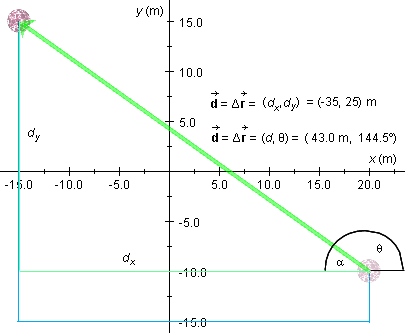

= (-35, 20) m
to be equal to d = 43.0 m. Now let us calculate the
direction angle q of this vector,
measured in the positive (counter-clockwise) sense relative to the
positive x-axis.
= (-35, 20) m
to be equal to d = 43.0 m. Now let us calculate the
direction angle q of this vector,
measured in the positive (counter-clockwise) sense relative to the
positive x-axis.
On Page 4 we have calculated the magnitude of the overall
displacement vector = (-35, 20) m
to be equal to d = 43.0 m. Now let us calculate the
direction angle q of this vector,
measured in the positive (counter-clockwise) sense relative to the
positive x-axis.
It is very useful to make a drawing when working with angles.

The diagram shows the displacement and its scalar components dx and
dy in green and the path traveled in blue. The
angle q is shown, as well as the
supplementary angle a. We will calculate
a first.
The two scalar components dx and dy form the two sides in a right-angle triangle opposite to the hypotenuse. Angle a is opposite to dy. Therefore, by the definition of the tangent,
tan a = |dy / dx| = |25/-35| = 0.7143 .
This implies
a = tan-1 0.7143 = 35.5o.
The supplementary angle q is equal to
q = 180o - a = 180o - 35.5o = 144.5o.